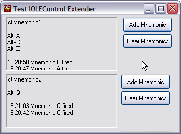

IOLEControl Samples (36K)
IOLEControl Samples (36K)
 7 Jun 2003
7 Jun 2003
First Posted
 How to Trap the Tab Key in a UserControl with IOLEInPlaceActiveObject
How to Trap the Tab Key in a UserControl with IOLEInPlaceActiveObject
 vbAccelerator COM/VB Support Type Library (vbaCOM.Tlb)
vbAccelerator COM/VB Support Type Library (vbaCOM.Tlb)

Using IOLEControl to intercept Alt-keys and Determine when events are frozen
Add proper mnemonic processing support to VB controls.
This article demonstrates how to replace VB's rather useless implementation of the IOLEControl interface with something you can actually use to get an event when an Alt-key is pressed. It also demonstrates how to use the code to receive EventsFrozen notifications which can be useful if you want to change a controls behaviour when the user has pressed pause in the IDE.
About IOLEControl
The IOLEControl interface is one of many which help interface an ActiveX control with its parent. This particular interface has something of a grab bag of features: it controls keyboard mnemonic (Alt-key) handling, notifying controls when ambient properties change and notifies controls when their container can or can't receive events.
VB's built-in implementation of this interface is half-hearted. The only feature that's implemented properly is the notification of ambient property changes through the AmbientChanged event. Mnemonic processing is broken: although you can specify a series of keys which can activate the control through the AccessKeys property, the only thing that happens when one of these keys is pressed is that the control gets focus if it didn't before. This allows you to create controls which behave like a label control, but not ones which behave like (for example) a Toolbar, when each button could have its own alt-key mnemonic. The EventsFrozen event notification is not directly implemented (although it appears that the AmbientChanged event fires with a property name of UIDead when this occurs, which might be a suitable alternative).
Using The Code
There are two samples in the download. The first is a minimal control demonstrating how to support multiple Alt- key mnemonics, which resembles the keyboard interface for something like a toolbar control. The second demonstrates how to use a control to determine when events are frozen.
1. Processing Mnemonics
To process mnemonics you need to do the following:
- Reference a Type Library Specifying the IOLEControl Interface
In this project, I have used the vbAccelerator COM/VB Support Type Library, however, any type library which supports a VB usable IOLEControl interface should be suitable (Eduardo Morcillo's excellent and comprehensive OleLib.TLB is a great alternative).
- Add mIOLEControl.bas and pcMnemonics.cls to your control's project
These provide most of the code you need to use IOLEControl are provided in the download. To make it easier to ensure you've done everything at compile time, mIOLEControl.bas refers directly to the control's name. You need to replace all instances of the - Implement Required Methods
In order to use the interface, you must implement GetControlInfo (which allows you to tell the container which mnemonic keys your control will intercept) and the OnMnemonic methods (which is fired whenever a mnemonic for your control is activated). These should be implemented as Friend methods so they are not visible to callers of the control but the mIOLEControl.bas module can call them.
The signatures of these methods are as follows:
Friend Function GetControlInfo(pCI As CONTROLINFO) As Long End Function Friend Function OnMnemonic(pMsg As MSG) As Long End Function
The simplest way to use them is in conjunction with the pcMnemonics class. This wraps up most of the details of creating accelerator tables which is required to support GetControlInfo and also provides a simple wrapper to store the mnemonics you define. In this case the code is as follows:
' Windows keyboard message constants: Private Const WM_SYSCHAR& = &H106& Private Const WM_SYSKEYDOWN& = &H104& Private m_cMnemonics As New pcMnemonics Friend Function GetControlInfo(pCI As CONTROLINFO) As Long pCI.cb = LenB(pCI) pCI.cAccel = m_cMnemonics.Count pCI.hAccel = m_cMnemonics.hAccel pCI.dwFlags = 0 End Function Friend Function OnMnemonic(pMsg As MSG) As Long If (pMsg.Message = WM_SYSCHAR Or _ pMsg.Message = WM_SYSKEYDOWN) Then Dim i As Long For i = 1 To m_cMnemonics.Count If (pMsg.wParam = m_cMnemonics.VirtKey(i)) Then ' Process the mnemonic press here Exit For End If Next i End If End FunctionNote that you can also modify mnemonic processing so you always receive Return and Escape key events even when in a dialog with Default or Cancel buttons defined when your control is in focus. To do this, modify the value of pCI.dwFlags in the GetControlInfo to any combination of CTRLINFO_EATS_RETURN (=1) and/or CTRLINFO_EATS_ESCAPE (=2).
- Add Code to Override The VB Implementation
To do this you need to create variables to store the original pointers for the GetControlInfo and OnMnemonic methods, and then use the ReplaceVTableEntry method to set the new ones:
Private m_ptrGetControlInfoOrig As Long Private m_ptrOnMnemonicOrg As Long Private Sub UserControl_Initialize() ' Get the IOLEControl interface of the control Dim IOleCtl As IOleControl Set IOleCtl = Me ' Replace IOLEControl methods: m_ptrGetControlInfoOrig = ReplaceVTableEntry( _ ObjPtr(IOleCtl), _ IDX_GetControlInfo, _ AddressOf mIOleControl.IOleControl_GetControlInfo, _ ObjPtr(Me) _ ) m_ptrOnMnemonicOrg = ReplaceVTableEntry( _ ObjPtr(IOleCtl), _ IDX_OnMnemonic, _ AddressOf mIOleControl.IOleControl_OnMnemonic, _ ObjPtr(Me) _ ) End Sub Private Sub UserControl_Terminate() ' Get the IOLEControl interface of the control Dim IOleCtl As IOleControl Set IOleCtl = Me ' Restore IOleControl methods: ReplaceVTableEntry _ ObjPtr(IOleCtl), _ IDX_GetControlInfo, _ m_ptrGetControlInfoOrig ReplaceVTableEntry _ ObjPtr(IOleCtl), _ IDX_OnMnemonic, _ m_ptrOnMnemonicOrg End Sub
Once this is done, you're ready to start adding new mnemonics. The pcMnemonics class provides methods to add shortcuts keys based on either the a string character (useful if your control has labels which include the ampersand prefix) or the virtual key code. There are two corresponding remove methods and also methods for enumerating the keys which have been set up. Refer to the demonstration to see these methods in action.
Note that if you want to change which mnemonics are set up at run-time, you may need to force the container to acknowledge that you want a change. In VB you can do this by modifying the AccessKeys property. I chose to simply toggle the value of this property between a space and an empty string, which does the trick:
Private Sub updateMnemonics()
If (UserControl.AccessKeys = "") Then
UserControl.AccessKeys = " "
Else
UserControl.AccessKeys = ""
End If
End Sub
2. Events Frozen Notifications
Setting up an Events Frozen notification is done in a very similar to the last example, except for the last two stages you implement and override the FreezeEvents method instead:
Private m_ptrFreezeEventsOrig As Long
Friend Function FreezeEvents(bFreeze As Long) As Long
' Process event here. If bFreeze = 0 then
' events are unfrozen, otherwise they are
' frozen.
End Function
Private Sub UserControl_Initialize()
Dim iOleCtl As IOleControl
Set iOleCtl = Me
m_ptrFreezeEventsOrig = ReplaceVTableEntry( _
ObjPtr(iOleCtl), IDX_FreezeEvents, _
AddressOf mIOleControl.IOleControl_FreezeEvents, _
ObjPtr(Me) _
)
End Sub
Private Sub UserControl_Terminate()
Dim iOleCtl As IOleControl
Set iOleCtl = Me
ReplaceVTableEntry _
ObjPtr(iOleCtl), IDX_FreezeEvents, _
m_ptrFreezeEventsOrig
End Sub
How It Works
This technique is a well-known hack to work around limitations of COM objects which don't provide the facilities you want, and relies on the way COM objects are laid out physically in memory. Since this is specified in the COM contract, you know that all COM objects
- must
Overriding COM Object Methods
A COM object in memory is laid out as a sequence of pointers to the functions to be called. This sequence is called the vTable (or Virtual Table). Each object instance contains a memory pointer to this table (an object pointer in memory is actually just a pointer to this). So if we can get the pointer to the vtable, then in theory we can replace any of the original functions with our own versions.
This is achieved in the code using the ReplaceVTableEntry method. Basically all this needs to do is to locate the table entry to replace, and put a new pointer in its place then return. My version of the code additionally allows you to associate another pointer with this change. I use this additional pointer to store an un-referenced instance of the owning control, so I can later get a control instance and call it.
To locate the table entry to replace, we first note that on a 32-bit process all memory addresses are 4 bytes long. The vTable is laid out sequentially, with each method following the other in sequence. So the table entry to replace can be identified by its index in the interface. You can see the layout of an IOLEControl interface by looking at its definition in the PlatformSDK (you will find this in the file OCIdl.Idl). However, note that as with all COM objects, the object must implement IUnknown, and hence the first three members must be the three members of the IUnknown interface:
- QueryInterface
- AddRef
- Release
Therefore the first entry of a COM interface will appear at position 4, following the pointer to the Release method.
A similar technique is used in the IOLEInPlaceActiveObject TabCatch sample, except in that code the entire vTable is replaced, rather than just individual methods.